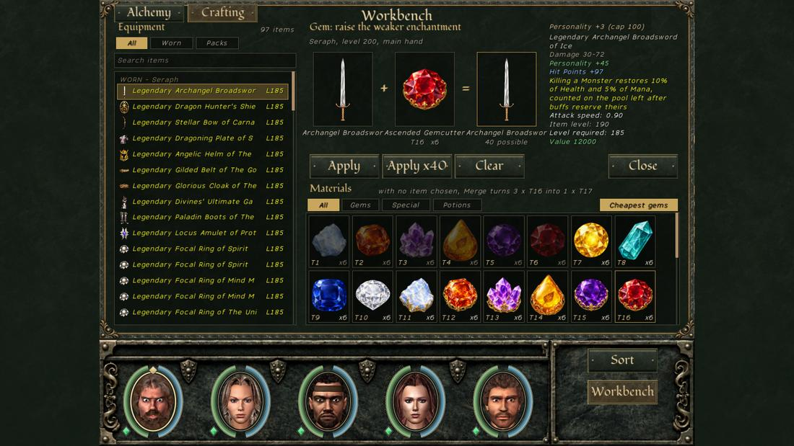
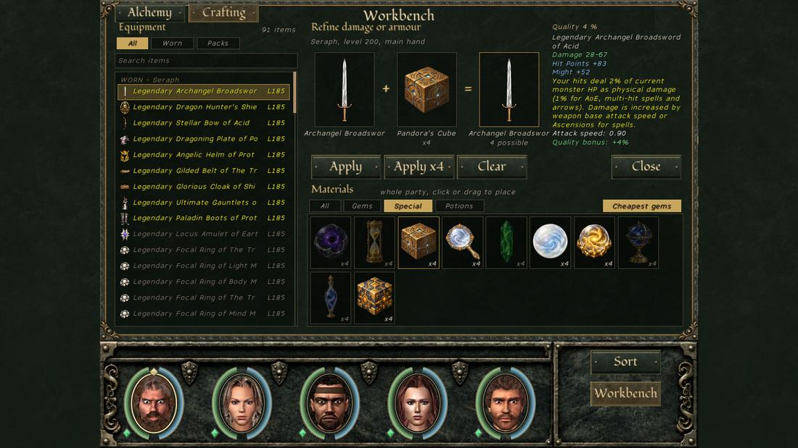
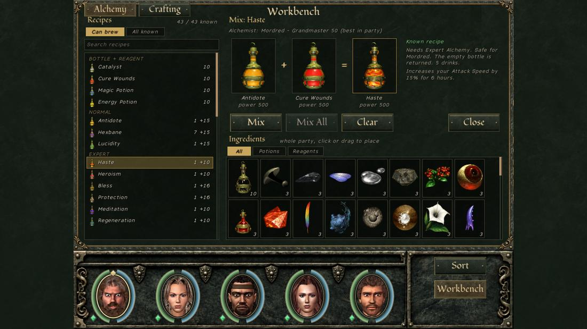

Every craft happens on the Workbench (character screen button, or right-click an item while holding a material), and its preview is the exact result: reloading does not change it.
| Stage | Do | Skip |
|---|---|---|
| Early (to ~40) | Tag one bag as the crafting bag (Shift+B). Clear maps fully: each first clear gives a Crafting Cube and two gems. Cube your main weapon to the cap as you level. Merge spare low gems (3 → 1). | Selling gems; spending Pandora's Cubes or gems on gear you will replace in ten levels. |
| Mid (~40–150) | Pandora's Cubes and gems on Rare and Epic keepers. Get one alchemist to Grandmaster and brew Enchant Item for plain items. Carry gold when visiting magic shops and alchemists: more gold means more special materials on their shelves. | Hourglass or Eye on an item below your level band. |
| Late (150+) | Eye of Void and Hourglass on your long-term weapons and body armour. Emerald them to the family's top rung. Move legendary powers to new gear with Orbs of Creation. Brew black potions at the highest power you can. | Weak black potions (only the best one you drink counts). |
| Material | Does | Shop price |
|---|---|---|
| Gems, tiers 1–20 | The base enchantment furthest below its own cap rises by 3 (a skill enchantment by 1), never past the gem's cap. Three gems of a tier merge into one of the next. | 1,000 … 300,000 |
| Crafting Cube | +2 item power on weapons and body armour, +4 on other pieces, up to owner level ÷ 5 (max 120) | 250,000 |
| Pandora's Cube | Quality +20 % (Common, Uncommon), +10 (Rare), +7 (Epic), +5 (Ancient), +4 (Primordial, Legendary), +1 (Celestial), +2 (artifacts); cap 20 %. Damage or armour × (1 + quality). Weapons and armour only | 325,000 |
| Eye of Void | A special enchantment from the strongest pool, on an item without one | 1,250,000 |
| Creator's Hourglass | A second base enchantment (never the same stat), first × 1–1.25 | 750,000 |
| Emerald of Power | The next rung of the item's family; enchantments, power, quality and rarity stay | 2,000,000 |
| Pearl of Memory | Removes one enchantment at random | 1,000,000 |
| Archibald's Mirror | Becomes an identified copy of a base item | 6,668,999 |
| Orb of Creation | Draws a legendary power out of an item, then gives it to another | 3,000,000 |
| Celestial Orb | The same for Celestial status | never sold |
| Endless Potion | Adds drinks to a refillable potion: best Alchemy + 10, at most 100 | never sold |
Five brewed potions also craft: Enchant Item (a first enchantment of power ÷ 5 × slot on an item with none), Lesser Element (power 40: Frost, Lightning, Flame or Venom on a weapon), Swiftness (40: Swift), Greater Element (55: Ice, Thunderbolts, Infernos or Acid), Darkness (100: "of Darkness"). They are permanent and work on bows.
Gem caps are round(tier ÷ 20 × M) × slot, M = 125 on Easy to Hell, 131 Nightmare, 138 Doom, 150 Road to Insanity and Beyond Madness. Slots: two-handed ×2, body ×1.5, bow, helm, gauntlets, boots ×1.25, one-handed, shield, belt, cloak, amulet ×1, ring ×0.75. A tier-20 gem caps a one-handed stat at 125 (Easy–Hell).
Where materials come from: kills (a gem in 0.6 % × √(monster level ÷ 10) of kills, bosses ×10; specials far rarer, with bad-luck protection), each map's first completion (a Cube and two gems), and the shelves of every magic shop and alchemist. No quest or chest gives them; Austerity gives none.

A level-60 Knight on MAW difficulty with a level-60 Rare Trollish War Sword (one-handed): Speed +18, Armor Class +13, item power 9.
| Step | Result | Damage |
|---|---|---|
| Dropped | power 9 | 3d6+6 (9–24) |
| 2 Crafting Cubes | power 12, the cap for a level-60 owner; a third is refused | 3d7+8 (11–29) |
| 7 Amber Droplets (tier 4, cap 25) | AC rises first (further below its cap), then both alternate: Speed 25, AC 25; 6 gems used | — |
| 2 Pandora's Cubes | Rare: +10 % each, quality 20 % | 3d8+10 (13–34) |
| Eye of Void | adds "of Ice"; the sword becomes Epic | + ice damage |
| Emerald of Power | Dark Elven Longsword of Ice; level requirement 48 → 51 | 3d8+12 (15–36) |
Other results seen in the game: a Hourglass on a sword with Might +9 added Speed +9; Enchant Item at power 100 on a plain mace gave Speed +20 (100 ÷ 5 × 1); nine tier-1 gems merge into three tier-2 and then one tier-3.

